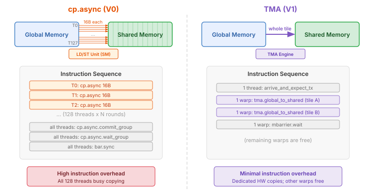
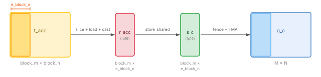
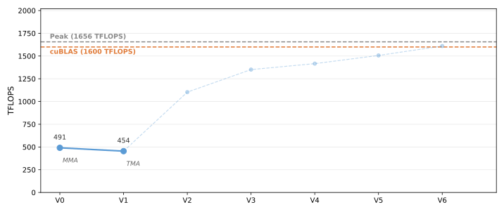

1. TMA Loads and TMA Epilogue¶
V0 used copy_async() for loading and
store_global() for write-back. Although these are tile-level
operations in Tilus, under the hood they are lowered to per-thread cp.async
and store instructions, where each thread copies only a small piece (e.g., 16
bytes). This version replaces both with TMA (Tensor Memory Access), a
dedicated hardware engine on Hopper and Blackwell GPUs that copies
multi-dimensional tiles between global and shared memory. A single TMA
instruction replaces hundreds of per-thread copies, and the TMA engine operates
independently without occupying SM compute resources.
The Full Kernel¶
@tilus.autotune(
"block_m, block_n, e_block_n",
[[128, 64, 16], [128, 128, 16], [128, 256, 32], [128, 256, 64]],
)
@tilus.autotune("block_k", [16, 32, 64])
class BlackwellMatmulV1(tilus.Script):
def __init__(self, block_m: int, block_n: int, block_k: int, e_block_n: int):
super().__init__()
self.block_m = block_m
self.block_n = block_n
self.block_k = block_k
self.e_block_n = e_block_n
def __call__(
self,
m_size: int32,
n_size: int,
k_size: int,
a_ptr: ~float16,
b_ptr: ~float16,
c_ptr: ~float16,
):
self.attrs.blocks = [cdiv(m_size, self.block_m), cdiv(n_size, self.block_n)]
self.attrs.warps = 4
offset_m: int32 = self.block_m * self.blockIdx.x
offset_n: int32 = self.block_n * self.blockIdx.y
g_a = self.global_view(a_ptr, dtype=float16, shape=[m_size, k_size])
g_b = self.global_view(b_ptr, dtype=float16, shape=[n_size, k_size])
s_a = self.shared_tensor(dtype=float16, shape=[self.block_m, self.block_k])
s_b = self.shared_tensor(dtype=float16, shape=[self.block_n, self.block_k])
t_acc = self.tcgen05.alloc(dtype=float32, shape=[self.block_m, self.block_n])
# allocate two barriers: one for TMA completion, one for MMA completion
tma_barrier, mma_barrier = self.mbarrier.alloc(counts=[1, 1]).tolist()
phase: uint32 = 0
self.sync()
for offset_k in range(0, k_size, self.block_k):
with self.single_warp():
# single_thread: only one thread signals the expected transaction bytes
with self.single_thread():
self.mbarrier.arrive_and_expect_tx(
tma_barrier, transaction_bytes=s_a.nbytes + s_b.nbytes
)
# TMA: hardware-accelerated async copy from global to shared memory
self.tma.global_to_shared(
src=g_a,
dst=s_a,
offsets=[offset_m, offset_k],
mbarrier=tma_barrier,
)
self.tma.global_to_shared(
src=g_b,
dst=s_b,
offsets=[offset_n, offset_k],
mbarrier=tma_barrier,
)
# wait for TMA transfers to complete
self.mbarrier.wait(tma_barrier, phase=phase)
self.tcgen05.mma(
s_a, s_b.transpose(), t_acc, enable_input_d=offset_k != 0
)
self.tcgen05.commit(mbarrier=mma_barrier)
self.mbarrier.wait(mma_barrier, phase=phase)
self.sync()
phase ^= 1
# TMA epilogue: tmem -> register -> shared -> global (via TMA)
g_c = self.global_view(c_ptr, dtype=float16, shape=[m_size, n_size])
s_c = self.shared_tensor(dtype=float16, shape=[self.block_m, self.e_block_n])
for e_offset_n in range(0, self.block_n, self.e_block_n):
t_acc_slice = self.tcgen05.slice(
t_acc,
offsets=[0, e_offset_n],
shape=[self.block_m, self.e_block_n],
dims=[0, 1],
)
r_acc = self.tcgen05.load(t_acc_slice)
self.tcgen05.wait_load()
self.store_shared(s_c, r_acc.to(float16))
self.fence.proxy_async(space="shared")
self.sync()
with self.single_warp():
self.tma.shared_to_global(
s_c,
g_c,
offsets=[offset_m, offset_n + e_offset_n],
dims=[0, 1],
)
self.tma.commit_group()
self.tma.wait_group(n=0, read=True)
self.sync()
self.sync()
self.tcgen05.dealloc(t_acc)
What Changed from V0¶
The kernel structure is the same as V0 — same block tiling, same tensor memory
accumulator. The main loop replaces copy_async with TMA for loading, and the
epilogue replaces store_global with a TMA-based write-back through shared
memory. This version also introduces the mbarrier tx-count mechanism for
tracking TMA completion, and single_thread() for operations
that should be executed by exactly one thread.
V0 |
V1 |
|
|---|---|---|
Load |
|
|
Sync load |
|
|
Epilogue |
|
TMA epilogue (tmem → register → shared → global via TMA) |
Barriers |
1 barrier (MMA only) |
2 barriers (TMA + MMA) |
New instructions |
|
TMA: Tensor Memory Access¶
{kind=link}

Comparison of cp.async (V0) vs TMA (V1) for copying a tile from global
to shared memory.¶
TMA is a hardware unit that asynchronously copies a multi-dimensional tile
between global and shared memory. Compared to cp.async:
Fewer instructions: one TMA call replaces hundreds of per-thread copy instructions.
No thread occupation: the TMA engine operates independently; the issuing warp can proceed to other work.
Built-in address generation: TMA handles multi-dimensional indexing internally, reducing register usage for address computation.
In Tilus, TMA loads are issued via
tma.global_to_shared().
The instruction takes a global tensor src, a shared tensor dst,
offsets into the global tensor, and an mbarrier for completion tracking.
For more details, see Script.tma.
Tracking TMA Completion with tx-count¶
In V0, we used mbarrier arrivals to track MMA completion. TMA introduces a second tracking mechanism: tx-count (transaction byte count).
The flow works as follows:
A single thread calls
mbarrier.arrive_and_expect_tx()to declare how many bytes the upcoming TMA transfers will deliver. This both arrives at the barrier (decrementing pending arrivals) and increases the barrier’s tx-count.tma.global_to_shared()is issued. When the TMA engine completes the transfer, the hardware automatically decrements the barrier’s tx-count by the number of bytes transferred.mbarrier.wait()blocks until both pending arrivals and tx-count reach zero — meaning all threads have arrived and all TMA data has landed in shared memory.
Note
The transaction_bytes must exactly match the total bytes that will be
transferred by the subsequent TMA calls. In our case, that is
s_a.nbytes + s_b.nbytes, the combined size of the two shared tiles
(see SharedTensor.nbytes).
Thread Group with a Single Thread¶
When
mbarrier.arrive_and_expect_tx()
is executed in a thread group, every thread in that group signals an arrival and
increases the expected tx-count on the given mbarrier. Since we only want
one arrival and one tx-count increment, we narrow the execution scope to
a single thread using single_thread():
with self.single_thread():
This ensures exactly one thread executes the arrive_and_expect_tx, while the
rest of the threads skip it.
Walkthrough¶
The kernel setup is identical to V0. The main loop and epilogue change.
Main Loop¶
for offset_k in range(0, k_size, self.block_k):
with self.single_warp():
# single_thread: only one thread signals the expected transaction bytes
with self.single_thread():
self.mbarrier.arrive_and_expect_tx(
tma_barrier, transaction_bytes=s_a.nbytes + s_b.nbytes
)
# TMA: hardware-accelerated async copy from global to shared memory
self.tma.global_to_shared(
src=g_a,
dst=s_a,
offsets=[offset_m, offset_k],
mbarrier=tma_barrier,
)
self.tma.global_to_shared(
src=g_b,
dst=s_b,
offsets=[offset_n, offset_k],
mbarrier=tma_barrier,
)
# wait for TMA transfers to complete
self.mbarrier.wait(tma_barrier, phase=phase)
self.tcgen05.mma(
s_a, s_b.transpose(), t_acc, enable_input_d=offset_k != 0
)
self.tcgen05.commit(mbarrier=mma_barrier)
self.mbarrier.wait(mma_barrier, phase=phase)
self.sync()
phase ^= 1
Within single_warp(), each iteration proceeds in two phases:
Load phase (TMA):
single_thread()ensures only one thread callsmbarrier.arrive_and_expect_tx(), declaring the total expected bytes (s_a.nbytes + s_b.nbytes).Two
tma.global_to_shared()calls issue the tile copies for A and B. The TMA engine transfers the data in the background and automatically decrements thetma_barrier’s tx-count on completion.mbarrier.wait()ontma_barrierblocks until both the arrival and all TMA bytes have landed in shared memory.
Compute phase (MMA):
tcgen05.mma()andtcgen05.commit()/mbarrier.wait()onmma_barrier— same as V0.
Note that V1 uses two barriers (tma_barrier and mma_barrier) instead
of V0’s single barrier. Both share the same phase variable since they are
used in lock-step within the same loop iteration.
TMA Epilogue¶
In V0, the epilogue used store_global() to write results
directly from registers to global memory. This is simple but not optimal: each
thread stores a small piece, generating many small memory transactions.
V1 uses a TMA epilogue that routes data through shared memory for a bulk
TMA store. However, the full accumulator (block_m × block_n, e.g.,
128 × 256 in fp32) is too large to load into registers or shared memory all at
once — it would consume too many registers and too much shared memory. Instead,
we slice the accumulator into narrow column strips of width e_block_n
(e.g., 16, where the e_ prefix stands for “epilogue”) and process one strip
at a time:
{kind=link}

Dataflow for one epilogue slice: tensor memory → registers (with cast to
fp16) → shared memory → global memory (via TMA). Only a block_m ×
e_block_n slice passes through registers and shared memory at a time.¶
For each strip, the instruction sequence is:
tcgen05.slice()extracts ane_block_n-wide slice of the accumulator in tensor memory.tcgen05.load()moves the slice to registers, andtcgen05.wait_load()waits for the load to complete.store_shared()writes the cast result to a shared memory buffer.fence.proxy_async()ensures the shared memory writes are visible to the TMA engine.store_sharedwrites via the generic proxy (the normal memory path used by regular load/store instructions), whiletma.shared_to_globalreads via the async proxy (a separate memory path used by the TMA engine). The fence ensures data written through one path is visible to the other.tma.shared_to_global()issues a bulk TMA transfer from shared to global memory.tma.commit_group()commits the pending TMA operations into a group, andtma.wait_group(n=0, read=True)waits for the group to complete.n=0means wait for all pending groups. Theread=Trueflag means we only wait for the TMA engine to finish reading from shared memory (so shared memory can be reused for the next slice), without waiting for the writes to global memory to be fully visible — since no subsequent instruction reads the global output.
The epilogue loops over N-dimension slices of width e_block_n:
# TMA epilogue: tmem -> register -> shared -> global (via TMA)
g_c = self.global_view(c_ptr, dtype=float16, shape=[m_size, n_size])
s_c = self.shared_tensor(dtype=float16, shape=[self.block_m, self.e_block_n])
for e_offset_n in range(0, self.block_n, self.e_block_n):
t_acc_slice = self.tcgen05.slice(
t_acc,
offsets=[0, e_offset_n],
shape=[self.block_m, self.e_block_n],
dims=[0, 1],
)
r_acc = self.tcgen05.load(t_acc_slice)
self.tcgen05.wait_load()
self.store_shared(s_c, r_acc.to(float16))
self.fence.proxy_async(space="shared")
self.sync()
with self.single_warp():
self.tma.shared_to_global(
s_c,
g_c,
offsets=[offset_m, offset_n + e_offset_n],
dims=[0, 1],
)
self.tma.commit_group()
self.tma.wait_group(n=0, read=True)
self.sync()
self.sync()
Note
TMA completion mechanisms differ by direction. Global-to-shared TMA
(used for loading) tracks completion via mbarrier tx-count.
Shared-to-global TMA (used here in the epilogue) uses a different mechanism:
commit_group + wait_group, similar to the legacy cp.async pattern.
See async copy completion mechanisms
and cp.async.bulk
in the PTX documentation.
Performance¶
TMA reduces instruction overhead for data movement, but V1 is still single-stage: load and compute are fully serialized, so performance is similar to V0. The complete source is at examples/blackwell_matmul/matmul_v1.py.

Blackwell matmul performance on B200 (M=N=K=8192, fp16). TFLOPS derived from NCU profiling. Peak TFLOPS estimated from cuBLAS tensor core utilization (96.6%).¶
What’s Next¶
V1 is still single-stage: the warp waits for TMA to complete before issuing the MMA, then waits for MMA before starting the next TMA. Load and compute are fully serialized.
In the next version, we introduce multi-stage software pipelining — the kernel prefills multiple stages of shared memory before entering the main loop, so that the TMA for iteration i+1 can overlap with the MMA for iteration i.